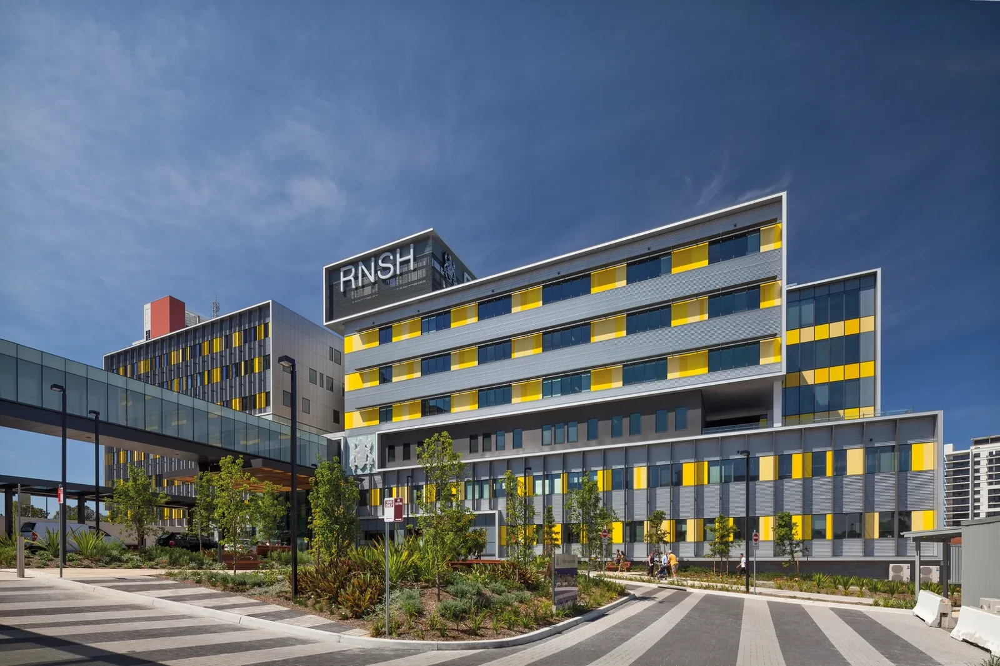

Reduce the equipment barrier
Create a portable alternative to laboratory systems costing over $75,000 and portable options still costing around $3,000.
Aeris by Optik
Aeris brings MIP and MEP testing, live pressure curves, repeatability guidance, and clear results into one portable workflow. It is designed to reduce reliance on costly specialised equipment and make respiratory muscle strength testing easier to introduce across more clinical settings.
Aeris feature
Product Overview
Laboratory systems for respiratory muscle strength testing can cost over $75,000, while portable alternatives can still cost around $3,000. Aeris explores a more accessible way to deliver the core testing journey in one portable product.
MIP measures the strength generated while breathing in, while MEP measures the strength generated while breathing out. Aeris brings both tests into the same guided workflow, from test selection and instructions through repeated attempts and final results.
Each effort is shown as a live pressure curve, repeated attempts are compared automatically, and the final result brings the measured value, predicted comparison, repeatability, attempt count, and test time together on one screen.
Client

The Respiratory Investigation Unit at Royal North Shore Hospital asked for a more accessible way to measure respiratory muscle strength without relying entirely on expensive laboratory systems.
Aeris turns that brief into a portable, guided product that supports MIP and MEP testing, repeated attempts, live pressure curves, and clear results in one workflow.
Designed for respiratory laboratories, speech pathology, and pulmonary rehabilitation.
Project Brief
Create a portable alternative to laboratory systems costing over $75,000 and portable options still costing around $3,000.
Support both respiratory strength tests through one clear and consistent workflow.
Show the pressure curve during each attempt, rather than relying on one final number alone.
Compare repeated attempts and clearly show when three results meet the required 10% repeatability range.
Create a working product ready for comparison with established laboratory equipment.
Keep instructions, navigation, repeated attempts, and results clear for respiratory laboratories, speech pathology, and pulmonary rehabilitation.
Development Process
The team defined what clinicians need before, during, and after each MIP or MEP test, including clear instructions, repeated attempts, repeatability guidance, and an easy-to-read result summary.
The journey was shaped from choosing a test to reviewing the final result, keeping each action clear and the next step easy to understand.
MIP and MEP were brought into one consistent experience with clear test selection, guided attempts, live feedback, and a direct path to the final result.
The results experience was refined to show each effort, compare repeated attempts, and make the repeatability outcome clear at a glance.
The complete experience was refined across the physical product and simulator, preparing Aeris for formal comparison with established laboratory systems.
Final Product
Select the required test and follow clear instructions for each breathing effort.
Review the pressure curve as the test happens, not only after it ends.
Aeris compares repeated attempts and clearly shows when the repeatability criterion has been met.
See the measured result, pressure curve, predicted comparison, repeatability, attempt count, and test time on one screen.
A portable approach designed to reduce dependence on costly specialised systems.
MIP and MEP selection, guided attempts, pressure curves, repeatability, and results brought into one experience.
The next stage is to compare Aeris with established laboratory equipment before it is considered for clinical use.
Project Team